| 続・心理統計学の基礎 |
| 続・心理統計学の基礎 |
母集団点双列相関係数は、標準化平均値差 と
と
| 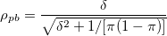 | (2.12) |
という関係にある。 が同じであっても、母比率が異なれば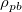は異なる。
> ### 点双列相関係数と標準化平均値差δ
> rhopb.delta <- function(d,pi){
+ rhopb <- d/sqrt(d^2+1/(pi*(1-pi)))
+ return(round(rhopb,3))
+ }
> rhopb.delta(d=c(0.2,0.5,0.6,0.8,1.0),pi=0.1)
[1] 0.060 0.148 0.177 0.233 0.287
> rhopb.delta(d=c(0.2,0.5,0.6,0.8,1.0),pi=0.3)
[1] 0.091 0.223 0.265 0.344 0.417
> rhopb.delta(d=c(0.2,0.5,0.6,0.8,1.0),pi=0.5)
[1] 0.100 0.243 0.287 0.371 0.447
は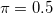のときに最大となるが、その場合でも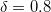に対応する値は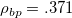程度でしかない。
 の信頼区間
の信頼区間2変数正規分布が仮定される場合、
| 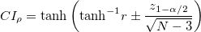 | (2.13) |
 分布にもとづく
分布にもとづく一方の各値における他方の条件付き分布が等分散の正規分布である場合、
| 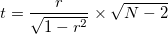 | (2.14) |
は、自由度 、非心度
、非心度
| 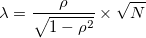 | (2.15) |
の非心分布に従う。
そこで、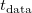をデータから計算された値として、
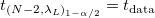となる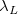を求める
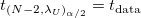となる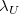を求める
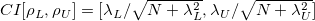 1
によってのCIを求める2。
変換と、RのパッケージMBESSにおける非心分布の信頼限界を求めるための関数conf.limits.nct()を利用する方法で、の信頼区間を求める。
メモ 変換によるCI 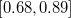 の方が、非心
> ### 相関係数の信頼区間
> data(cars) # carsデータを使用
> r <- cor(cars$speed,cars$dist)
> n <- dim(cars)[1]
> # Z変換にもとづく方法
> tanh(atanh(r)-qnorm(p=0.975)/sqrt(n-3)) # 下限
[1] 0.6816422
> tanh(atanh(r)+qnorm(p=0.975)/sqrt(n-3)) # 上限
[1] 0.8862036
> # 非心t分布にもとづく方法
> library("MBESS") # Kelley (2007) によるMBESSの読み込み
> t <- r/sqrt(1-r^2)*sqrt(n-2) # t値の計算
> df <- n-2
> (ci.lambda <- conf.limits.nct(t.value=t,df=df,conf.level=0.95))
$Lower.Limit
[1] 6.716289
$Prob.Less.Lower
[1] 0.025
$Upper.Limit
[1] 12.15884
$Prob.Greater.Upper
[1] 0.025
> ci.lambda$Lower.Limit/sqrt(n+ci.lambda$Lower.Limit^2) # 下限
[1] 0.6886834
> ci.lambda$Upper.Limit/sqrt(n+ci.lambda$Upper.Limit^2) # 上限
[1] 0.8644462
分布によるCI 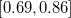 より若干広めである。 ちなみに、Rの関数cor.test()は変換による方法でCIを算出している。
2群の平均値差の検定のための検定統計量3
 |
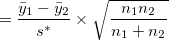 | (2.16) | ||
 |
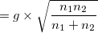 | (2.17) |
は、自由度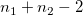で非心度が
 |
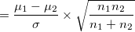 | (2.18) | ||
|
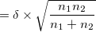 | (2.19) |
の非心分布に従う。
そこで、をデータから計算された値として、
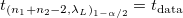となるを求める
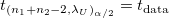となるを求める
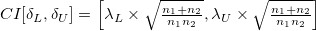 4
がのCI。
 の近似的な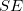
の近似的な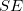
| 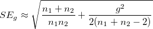 | (2.20) |
を利用して、
| 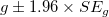 | (2.21) |
で求めることもできる。
メモ |
南風原 (2014) では、式(2.20) は 一方、大久保・岡田 (2012)では、式(2.20)は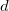ので、CIは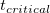で求めるとしている。 |
RのデータPlantGrowthを利用し、のCIを比較してみる。
> ### 標準化平均値差の信頼区間
> data(PlantGrowth) # 植物の成長データ
> data01 <- subset(PlantGrowth, group!="trt2") # 2群だけ取り出す
> data01$group <- droplevels(data01$group) # 水準trt2を削除
> fit.ttest <- t.test(weight~group, var.equal=T, data=data01) # t検定
> t <- as.numeric(fit.ttest$statistic) # t値
> n1 <- dim(subset(data01,group=="ctrl"))[1] # n1
> n2 <- dim(subset(data01,group=="trt1"))[1] # n2
> df <- n1+n2-2 # 自由度
> # 非心度を利用
> library("MBESS")
> (ci.lambda <- conf.limits.nct(t.value=t,df=df,conf.level=0.95)) # 非心度のCI
$Lower.Limit
[1] -0.8222405
$Prob.Less.Lower
[1] 0.025
$Upper.Limit
[1] 3.173121
$Prob.Greater.Upper
[1] 0.025
> ci.lambda$Lower.Limit * sqrt((n1+n2)/(n1*n2)) # 下限
[1] -0.3677171
> ci.lambda$Upper.Limit * sqrt((n1+n2)/(n1*n2)) # 上限
[1] 1.419063
> # effsizeのcohen.d()で算出
> library("effsize")
> (ci.g <- cohen.d(weight~group, data=data01)) # "effsize"で求めたCI
Cohen's d
d estimate: 0.5327478 (medium)
95 percent confidence interval:
inf sup
-0.4769679 1.5424635
> # gとその近似的SEを用いて算出
> SE.d.approx <- sqrt((n1+n2)/(n1*n2)+(ci.g$estimate^2)/(2*(n1+n2-2)))
> as.numeric(ci.g$estimate - 1.96 * SE.d.approx) # 下限
[1] -0.3609002
> as.numeric(ci.g$estimate + 1.96 * SE.d.approx) # 上限
[1] 1.426396
メモ 非心
分布による正確なCIは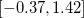、近似的を用いると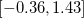。一方、cohen.d()ではとかなり広め。cohen.d()ではCooper et al. (2009) の改良版を用いているとのこと。
差得点の平均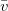とその不偏分散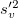を用いた検定統計量
|
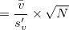 | (2.22) | ||
|
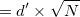 | (2.23) |
は、自由度で非心度
|
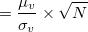 | (2.24) | ||
|
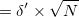 | (2.25) |
の非心分布に従う。
効果量 は、「効果の大きさ」の指標であると同時に、「効果の一般性」の指標でもある。
は、「効果の大きさ」の指標であると同時に、「効果の一般性」の指標でもある。
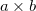の連関表について、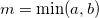のとき、
| 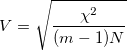 | (2.26) |
は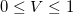を取る。
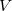の母数を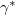とすると、
| 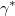 |  |
(2.27) | ||
|
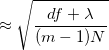 | (2.28) |
となる。 ただし、
| 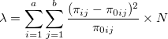 | (2.29) |
は非心度。カイ2乗統計量
| 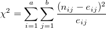 | (2.30) |
は、近似的に自由度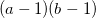、非心度 の非心カイ2乗分布に従う。
の非心カイ2乗分布に従う。
これを利用して、クラメルの連関係数のCIを求めることができる。
RのデータHairEyeColorを用いて、クラメルの連関係数のCIを求める。
> ### クラメルの連関係数
> data(HairEyeColor)
> data01 <- apply(HairEyeColor, c(1,2), sum) # 男女合計
> chisq.test(data01) # カイ2乗検定
Pearson's Chi-squared test
data: data01
X-squared = 138.29, df = 9, p-value < 2.2e-16
> (V <- sqrt(138.29/(3*592))) # クラメルの連関係数
[1] 0.2790448
> (ci.lambda <- conf.limits.nc.chisq(Chi.Square=138.29,df=9,conf.level=0.95))
$Lower.Limit
[1] 88.73678
$Prob.Less.Lower
[1] 0.025
$Upper.Limit
[1] 179.583
$Prob.Greater.Upper
[1] 0.025
> sqrt((9+ci.lambda$Lower.Limit)/(3*592)) # 下限
[1] 0.2345889
> sqrt((9+ci.lambda$Upper.Limit)/(3*592)) # 上限
[1] 0.325859
で、となった。
 個の独立変数を所与としたときの従属変数の分布が等分散の正規分布に従うとすると、検定統計量
個の独立変数を所与としたときの従属変数の分布が等分散の正規分布に従うとすると、検定統計量
 |
(2.31) |
は、自由度と、非心度が
|
(2.32) | |||
|
(2.33) |
の非心 分布に従う5。 この非心度の逆変換
分布に従う5。 この非心度の逆変換
| (2.34) |
を用いて、非心度のCIから決定係数のCIを算出する。
なお、の推定量としては、自由度調整済み決定係数
| (2.35) |
が用いられる。
南風原 (2002) の復習
変数 、、があるとする。
、、があるとする。
とからの影響を除いた成分（でを予測したときの残差）との相関係数
| (2.36) |
が部分相関係数。
からの影響を除いた成分との相関係数
| (2.37) |
が偏相関係数。
このとき、
| (2.38) |
が成り立つことから、とは符号が同じで、絶対値はの方が大きい。
によって、を回帰予測することを考える。そのときの回帰係数は、
| (2.39) | ||||
|
(2.40) | |||
|
(2.41) | |||
|
(2.42) |
となる。
次に、によって、 を回帰予測することを考える。そのときの回帰係数は、
を回帰予測することを考える。そのときの回帰係数は、
 |
(2.43) | |||
|
(2.44) | |||
|
(2.45) | |||
|
(2.46) |
となる。 つまり、偏回帰係数は
| (2.47) |
である。
また、全ての変数を標準化していれば、標準偏回帰係数
| (2.48) |
を得る。
独立変数がのみのモデルの分散説明率は。 ここに独立変数を追加すると、モデルの分散説明率は
| (2.49) |
となる。すると、を加えたことによる分散説明率の増分は、
| (2.50) | ||||
|
(2.51) | |||
|
(2.52) | |||
|
(2.53) | |||
|
(2.54) |
と、からの影響を除いた部分ととの間の部分相関係数の2乗になる。
また、個の独立変数を加えて個にした場合、検定統計量
| (2.55) |
は、自由度と、非心度が
|
(2.56) | |||
|
(2.57) |
の非心分布に従う。 この決定係数の増分は、部分決定係数である。 は、 からだけでは導けないので、検定力を直接規定する効果量ではない。
の推定量 は、変数投入後の自由度調整済みと変数投入前の自由度調整済み の差が用いられる。
は、変数投入後の自由度調整済みと変数投入前の自由度調整済み の差が用いられる。
メモ |
の推定には自由度調整済みの差を用いるが、偏決定係数のCIの算出に用いる また、部分決定係数のCIについては記載がない。 ただし、部分決定係数は部分相関係数の2乗なのであるから、相関係数のCIを求める方法で決定係数のCIを求めることができるのでは？ |
| (2.58) | ||||
|
(2.59) | |||
|
(2.60) | |||
|
(2.61) |
はだけから導けるので、検定力を直接規定する効果量である。よって、式(2.57) の非心度は、
| (2.62) |
と書け、
| (2.63) |
と逆変換できる。
式(2.55)と式(2.57)から、非心度のCIを求め、これを式(2.63)により逆変換することでのCIを得る6。
データattitudeで、2つの独立変数を所与としたときののCI7。
> ### 回帰分析における決定係数
> data(attitude) # 管理職による評価データ
> # 独立変数を2とした場合の決定係数のCI
> fit.before <- lm(rating~complaints+privileges, data=attitude)
> summary(fit.before)
Call:
lm(formula = rating ~ complaints + privileges, data = attitude)
Residuals:
Min 1Q Median 3Q Max
-12.7887 -5.6893 -0.0284 6.2745 9.9726
Coefficients:
Estimate Std. Error t value Pr(>|t|)
(Intercept) 15.32762 7.16023 2.141 0.0415 *
complaints 0.78034 0.11939 6.536 5.22e-07 ***
privileges -0.05016 0.12992 -0.386 0.7025
---
Signif. codes: 0 ‘***’ 0.001 ‘**’ 0.01 ‘*’ 0.05 ‘.’ 0.1 ‘ ’ 1
Residual standard error: 7.102 on 27 degrees of freedom
Multiple R-squared: 0.6831, Adjusted R-squared: 0.6596
F-statistic: 29.1 on 2 and 27 DF, p-value: 1.833e-07
> (ci.lambda <- conf.limits.ncf(F.value=29.1, df.1=2, df.2=27,conf.level=0.95))
$Lower.Limit
[1] 21.92565
$Prob.Less.Lower
[1] 0.025
$Upper.Limit
[1] 107.3271
$Prob.Greater.Upper
[1] 0.025
> ci.lambda$Lower.Limit/(30+ci.lambda$Lower.Limit) # 下側
[1] 0.4222508
> ci.lambda$Upper.Limit/(30+ci.lambda$Upper.Limit) # 上側
[1] 0.7815435
> # 2つの独立変数を確率変数と考えた場合のR^2のCI（MBESSの関数ci.R2()）
> ci.R2(R2=0.6831,df.1=2,df.2=27,conf.level=0.95,Random.Predictors=T)
$Lower.Conf.Limit.R2
[1] 0.4097597
$Prob.Less.Lower
[1] 0.025
$Upper.Conf.Limit.R2
[1] 0.8244622
$Prob.Greater.Upper
[1] 0.025
メモ 、で、（所与）、 独立変数を4つ追加して、偏決定係数のCIを算出。 、
![$[.41, .82]$](images/img-0144.png) （ランダム） となった。ランダムと考えた方がやや広めである。
（ランダム） となった。ランダムと考えた方がやや広めである。
> # 独立変数を4つ加えた場合の偏決定係数のCI
> fit.after <- update(fit.before,~.+learning+raises+critical+advance)
> summary(fit.after)
Call:
lm(formula = rating ~ complaints + privileges + learning + raises +
critical + advance, data = attitude)
Residuals:
Min 1Q Median 3Q Max
-10.9418 -4.3555 0.3158 5.5425 11.5990
Coefficients:
Estimate Std. Error t value Pr(>|t|)
(Intercept) 10.78708 11.58926 0.931 0.361634
complaints 0.61319 0.16098 3.809 0.000903 ***
privileges -0.07305 0.13572 -0.538 0.595594
learning 0.32033 0.16852 1.901 0.069925 .
raises 0.08173 0.22148 0.369 0.715480
critical 0.03838 0.14700 0.261 0.796334
advance -0.21706 0.17821 -1.218 0.235577
---
Signif. codes: 0 ‘***’ 0.001 ‘**’ 0.01 ‘*’ 0.05 ‘.’ 0.1 ‘ ’ 1
Residual standard error: 7.068 on 23 degrees of freedom
Multiple R-squared: 0.7326, Adjusted R-squared: 0.6628
F-statistic: 10.5 on 6 and 23 DF, p-value: 1.24e-05
> (Drho <- 0.7326-0.6831) # 追加した4変数に関する部分決定係数
[1] 0.0495
> (Drho.adj <- 0.6628-0.6594) # 自由度調整済み部分決定係数
[1] 0.0034
> (F.value <- Drho/(1-0.7326) * (30-6-1)/4)
[1] 1.064417
> (ci.lambda <- conf.limits.ncf(F.value=F.value,df.1=4,df.2=23,conf.level=0.95))
$Lower.Limit
[1] NA
$Prob.Less.Lower
[1] NA
$Upper.Limit
[1] 12.5678
$Prob.Greater.Upper
[1] 0.025
> ci.lambda$Lower.Limit/(30+ci.lambda$Lower.Limit) # 下側
[1] NA
> ci.lambda$Upper.Limit/(30+ci.lambda$Upper.Limit) # 上側
[1] 0.295242
 で、偏決定係数の。
で、偏決定係数の。
| (2.64) | ||||
|
(2.65) |
の近似的なCIは、
| (2.66) |
で求められる8。
検定統計量
| (2.67) |
は、自由度と、非心度が
|
(2.68) | |||
|
(2.69) | |||
|
(2.70) |
の非心分布に従う9。
非心度は、
| (2.71) |
と逆変換でき、のCIからのCIを計算する。
メモ |
||||||||
要因Aに関する母集団分散について、テキストでは |
| (2.74) |
を標準化平均値差の拡張と考えたとき、分散説明率といずれが解釈可能性の観点から優れているだろうか？
テキストでは、
水準の数と従属変数の分散が連動する（群内分散が一定のまま、群間分散が増大）場合はや
水準の数と従属変数の分散が連動しない場合はや
を報告するのが自然であるとしている。
決定係数の点推定にあたっては、
 |
(2.75) | |||
| (2.76) | ||||
 |
(2.77) |
がある。
自由度調整済みの決定係数 と分散の不偏推定量を用いたはほとんど値に差がなく10、かつ回帰分析との連続性から前者を報告するのが自然であるとテキストは主張している。
と分散の不偏推定量を用いたはほとんど値に差がなく10、かつ回帰分析との連続性から前者を報告するのが自然であるとテキストは主張している。
メモ |
また、ランダム効果を考慮した場合も |
メモ |
点推定値は、、で異なった値となるが、CIについては共通である。これはいささか違和感を覚える。 もちろん、これは決定係数に限った話ではない。 |
メモ |
回帰分析と同じように、分散分析においても水準はランダムである場合がある。 ここで紹介されている方法は、固定された独立変数の下での等分散正規性を仮定したものであるから、ランダム要因が含まれている場合、また等分散性が成り立たない場合については、それ以外の方法をとる必要があるはずである。 決定係数については、Kirk (2013) でと とで固定効果とランダム効果に分けて記述されていたような（要確認）。 |
データPlantGrowthを用いて、決定係数と信頼区間を求める。
従属変数はweight、独立変数はgroup（3水準）、各10個体からなる1要因完全無作為デザイン。
> ### 分散分析（完全無作為1要因）
> data(PlantGrowth) # データの読み込み
> fit.aov <- aov(weight~group, data=PlantGrowth) # 分散分析
> summary(fit.aov) # 分散分析の結果
Df Sum Sq Mean Sq F value Pr(>F)
group 2 3.766 1.8832 4.846 0.0159 *
Residuals 27 10.492 0.3886
---
Signif. codes: 0 ‘***’ 0.001 ‘**’ 0.01 ‘*’ 0.05 ‘.’ 0.1 ‘ ’ 1
> # 決定係数の点推定
> SSa <- summary(fit.aov)[[1]]$"Sum Sq"[1]
> SSe <- summary(fit.aov)[[1]]$"Sum Sq"[2]
> MSa <- summary(fit.aov)[[1]]$"Mean Sq"[1]
> MSe <- summary(fit.aov)[[1]]$"Mean Sq"[2]
> (hat.eta.sq <- SSa / (SSa + SSe)) # η2乗
[1] 0.2641483
> (epsilon.sq <- 1-(30-1)/(30-3)*(1-hat.eta.sq)) # 自由度調整済みη2乗
[1] 0.2096408
> hat.sigma.sq.a <- 2*(MSa-MSe)/30
> hat.sigma.sq.e <- MSe
> (omega.sq <- hat.sigma.sq.a / (hat.sigma.sq.a + hat.sigma.sq.e)) # ω2乗
[1] 0.2040788
> # 決定係数の区間推定
> ci.lambda <- conf.limits.ncf(F.value=4.846,df.1=2,df.2=27,conf.level=0.95)
> ci.lambda$Lower.Limit / (30+ci.lambda$Lower.Limit) # 下側
[1] 0.009902468
> ci.lambda$Upper.Limit / (30+ci.lambda$Upper.Limit) # 上側
[1] 0.4638933
> Lambda2Rsquare(Lambda=ci.lambda$Lower.Limit, N=30) # 下側（関数利用）
[1] 0.009902468
> Lambda2Rsquare(Lambda=ci.lambda$Upper.Limit, N=30) # 上側（関数利用）
[1] 0.4638933
※の算出の際に、SSでなくMSを用いそうになるので注意。 ここでは、非心度からへの変換に、関数Lambda2Rsquare()を用いる方法も行ってみた。結果は、。
バランスデザインが基本であり、母集団においても各セルの人数割合が等しいと想定する。
このとき、検定対象となる効果を で表せば、検定統計量は非心度
で表せば、検定統計量は非心度
|
(2.78) | |||
|
(2.79) | |||
|
 |
(2.80) |
の非心分布に従う11。
メモ |
テキストでは、バランスデザインの分散分析では「他の独立変数の影響」が生じないため、「部分決定係数」という用語ではなく、当該の要因によって従属変数の分散のどれだけの割合を説明できるかを「決定係数」と呼ぶことになる、とされている。 しかし、モデル全体での分散説明率を指すのか、それとも各独立変数（要因）を加えたことによる説明率の増分を指すのかの区別は重要であり、回帰分析と分散分析が本質的に同じなのであれば、このような呼称の区別は無意味である。 分散分析でも現状はアンバランスデザインが多いことを考えれば、むしろ、独立変数間の相関とは無関係に、前者は「決定係数」、後者は「部分決定係数」と呼ぶ方が混乱がなくてよいと考える。 |
 |
(2.81) |
当該要因について、検定統計量の値を求める。 これを上側下側の限界値とする非心度を求め、非心度を
| (2.82) |
によって変換することで、偏決定係数のCIを得る。
データnpkを用いて、偏決定係数のCIを算出してみる。
> ### 分散分析（完全無作為2要因）
> data(npk) # データの読み込み
> fit.aov <- aov(yield~N+P+N:P,data=npk) # 分散分析
> summary(fit.aov)
Df Sum Sq Mean Sq F value Pr(>F)
N 1 189.3 189.28 5.758 0.0263 *
P 1 8.4 8.40 0.256 0.6187
N:P 1 21.3 21.28 0.647 0.4305
Residuals 20 657.4 32.87
---
Signif. codes: 0 ‘***’ 0.001 ‘**’ 0.01 ‘*’ 0.05 ‘.’ 0.1 ‘ ’ 1
> # Nの主効果について、部分決定係数を求める
> SSn <- summary(fit.aov)[[1]]$"Sum Sq"[1]
> SSp <- summary(fit.aov)[[1]]$"Sum Sq"[2]
> SSi <- summary(fit.aov)[[1]]$"Sum Sq"[3]
> SSe <- summary(fit.aov)[[1]]$"Sum Sq"[4]
> (hat.eta.sq.part <- SSn / (SSn + SSp + SSi + SSe)) # ε2乗とω2乗は略
[1] 0.215985
> # Nの主効果について、偏決定係数を求める
> (hat.eta.sq.partial <- SSn / (SSn + SSe)) # ε2乗とω2乗は略
[1] 0.2235571
> ci.lambda <- conf.limits.ncf(F.value=5.758,df.1=1,df.2=20,conf.level=0.95)
> Lambda2Rsquare(Lambda=ci.lambda$Lower.Limit, N=24) # 下側（関数利用）
[1] NA
> Lambda2Rsquare(Lambda=ci.lambda$Upper.Limit, N=24) # 上側（関数利用）
[1] 0.4540877
の
最尤法により最小化される指標をとし、その最小値を とすると、
とすると、
| (2.83) |
は、近似的に自由度
| (2.84) |
非心度
| (2.85) |
の非心カイ2乗分布に従う12。
一般に、モデルの自由度が小さい（推定すべき母数がたくさんある）ほどは小さくなる。 そこで、母集団における1自由度あたりのを
| (2.86) | ||||
|
(2.87) |
と定義する13。
データから非心度のCIを求め、これを変換することでのCIを求めることができる。
からで推定することを考えると、
| (2.88) | ||||
|
(2.89) | |||
|
(2.90) | |||
|
(2.91) | |||
|
(2.92) |
によってを点推定することができる。
データability.covを用いて、確認的因子分析（1因子）を行ったときのRMSEAのCIを算出する。
> ### 共分散構造分析
> data(ability.cov)
> library("lavaan")
> cfa.model <- "g =~ general + picture + blocks + maze + reading + vocab" # モデル
> fit.cfa <- cfa(cfa.model, sample.cov=ability.cov$cov, sample.nobs=112) # 分析
> fitMeasures(fit.cfa,c("chisq","df","rmsea")) # 適合度指標
chisq df rmsea
78.327 9.000 0.262
> ci.lambda <- conf.limits.nc.chisq(Chi.Square=78.327,df=9,conf.level=0.95)
> sqrt(ci.lambda$Lower.Limit / (112*9)) # 下側
[1] 0.2002755
> sqrt(ci.lambda$Upper.Limit / (112*9)) # 上側
[1] 0.3273406
で、 となった。
Footnotes
をと表している。は観測変数、は母数の数。また、は、母集団分散共分散の値で評価したの値。大きいほど、母集団分散共分散とモデルとデータから導かれる分散共分散とが乖離していることになる。| 続・心理統計学の基礎 |
 水準に均等割した場合との各群の人数比で重みづけしたものだと考えられる。 つまり、このような人数比を母集団が成り立っていた場合の分散、ということになる。 この想定が妥当かどうかは、ケースバイケースだと思うのだが…。（調査であれば人数比は偶然、実験であっても欠測が生じる。）
水準に均等割した場合との各群の人数比で重みづけしたものだと考えられる。 つまり、このような人数比を母集団が成り立っていた場合の分散、ということになる。 この想定が妥当かどうかは、ケースバイケースだと思うのだが…。（調査であれば人数比は偶然、実験であっても欠測が生じる。）